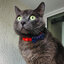

Sobre MÍ
Descripción
Soy Floki Sama, Dr. en Curar Almas. Me defino como un panzón con un amor insaciable por la comida y una devoción absoluta por la siesta. Con mi pelaje gris y mis ojos verdes, soy el rey indiscutible de la casa. Mi pancita es mi mayor atributo, ¡no hay abrazo más reconfortante que el mío! Dicen que acariciarme es como abrazar un peluche vivo que cura el alma. Estoy en busca de un trabajo que valore mi encanto felino y mi habilidad para encontrar la comodidad en cualquier lugar.
Antecedentes y Características Personales

Datos Personales
-
Edad:8 años.
-
Chip: 0000000087458.
-
Raza: Pelo Corto.
-
Colores: Gris, ojos verdes.
-
Comuna: Ciudad Gatuna.
-
Dirección: Calle Felinos #420.
-
Humano Favorito: Karen Macho.
-
Instagram: Click para ver IG.
Características
Amistoso.
Cazador.
Siestas.
Apetito.
Estudios y Grados
-
Escuela de Rascadores "Garra y Colmillo" (2018):
Certificado en el arte del rascado de muebles y postes para gatos. Aprendí las técnicas más efectivas para mantener mis garras afiladas y mi territorio seguro.
-
Universidad de Siestas "Ronroneo y Descanso" (2020):
Magister en la ciencia de la siesta. Aprendí a dominar la habilidad de dormir en cualquier lugar y en cualquier momento, manteniendo siempre un oído alerta ante posibles peligros
-

Universidad de Ronroneo y Felicidad "Garritas Reconfortantes" (2022):
Doctorado en Curar el Alma. Graduado con honores. Especializado en brindar amor incondicional, consuelo y felicidad a mis humanos a través de ronroneos reconfortantes y miradas tiernas. Dominio en la técnica de acurrucarse en los momentos de necesidad y ser un compañero leal en todas las situaciones.
Experiencia Laboral
MODELO E INFLUENCER
Influencer y modelo, desde que era un gatito pequeño, siempre supe que tenía algo especial que compartir con el mundo. Con mi pelaje gris impecable y mis ojos verde esmeralda hipnotizan a cualquiera, he colaborado con marcas de renombre, mostrando su último equipo para gatos o modelando elegantes collares y correas.
Desde el año 2016 - 2020
CATADOR DE PREMIOS
Mi paladar refinado puede distinguir entre las delicias más exquisitas y las comidas mediocres para gatos. Desde croquetas crujientes hasta suaves patés, he probado todo tipo de manjares felinos. Mi lengua experta puede detectar los sabores más sutiles y mi nariz siempre está alerta ante nuevos aromas.
Desde el año 2016 - 2023

CATADOR DE SILLONES
Experto en comodidad de sillones. Soy el rey del relax, el sabelotodo del descanso. Desde el momento en que entro en una habitación, sé exactamente dónde está el mejor lugar para echar una siesta. Ya sea un sofá mullido o un sillón reclinable, estoy siempre listo para probar su comodidad.
Desde el año 2016 - Actualidad